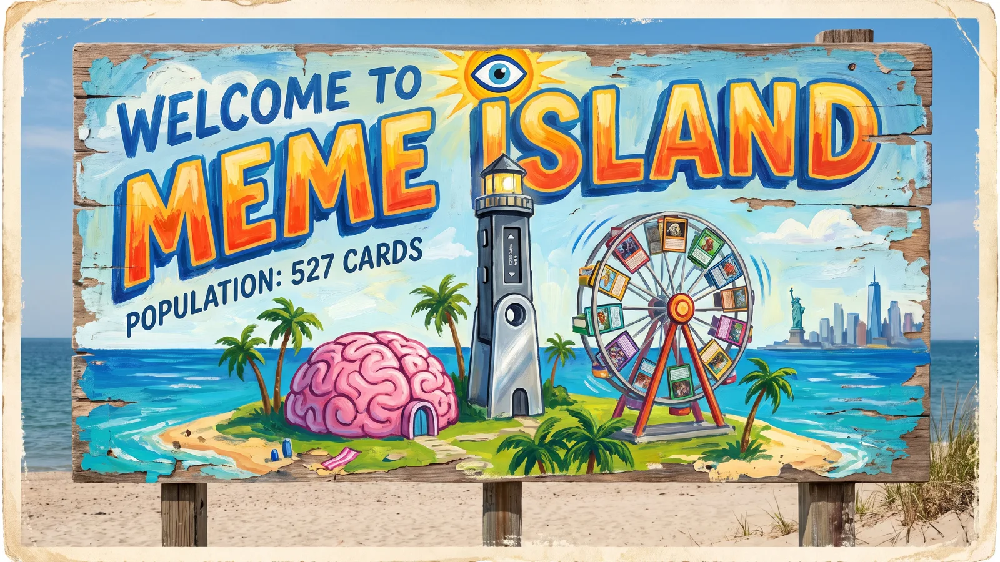

All 527 cards of The Memes by 6529, hung on an island that takes them exactly as seriously as they deserve. A hardware wallet lighthouse, a brain you can walk into, a floor price you can climb, a bank that steals JPGs, and the NEW YORKERS on holiday. There are six keys. There is a vault. Say gm.